Wix: a six-month communication plan to go from “easy” to “professional”
The brief was an organization spokesperson’s semi-annual work plan, week by week. I chose Wix: a platform with over 200 million users that the market associates with “easy and generic”, even though its capabilities are already professional-grade. The plan closes that gap with 70 actions over 24 weeks, from internal communication to press, social media and social responsibility.
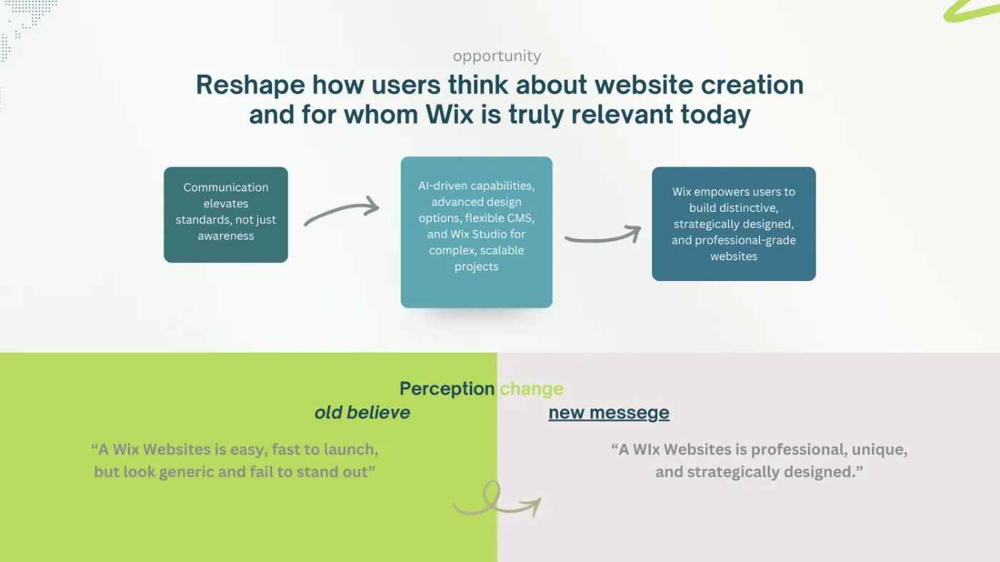
The starting point: capability exceeds perception
Wix let more than 200 million people and businesses publish fast. That accessibility was a success and, at the same time, left an image: look-alike sites, drag and drop, templates. Meanwhile, the platform added AI capabilities, advanced design options, a flexible CMS and Wix Studio for complex projects. The gap is not in the product: it is in how people think about it. The strategy is called “Beyond Democratization”: moving the market’s perception toward a professional standard.
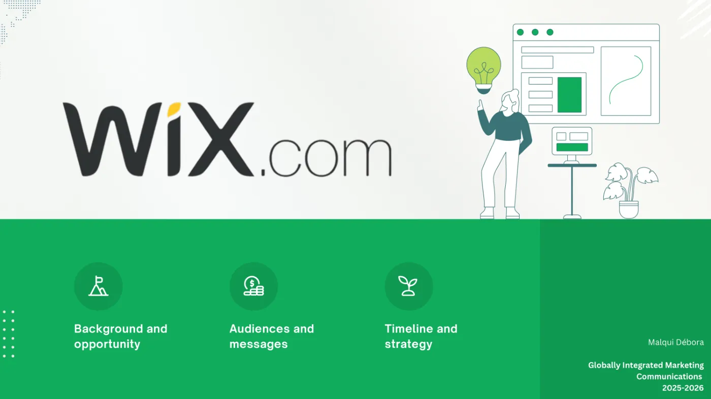
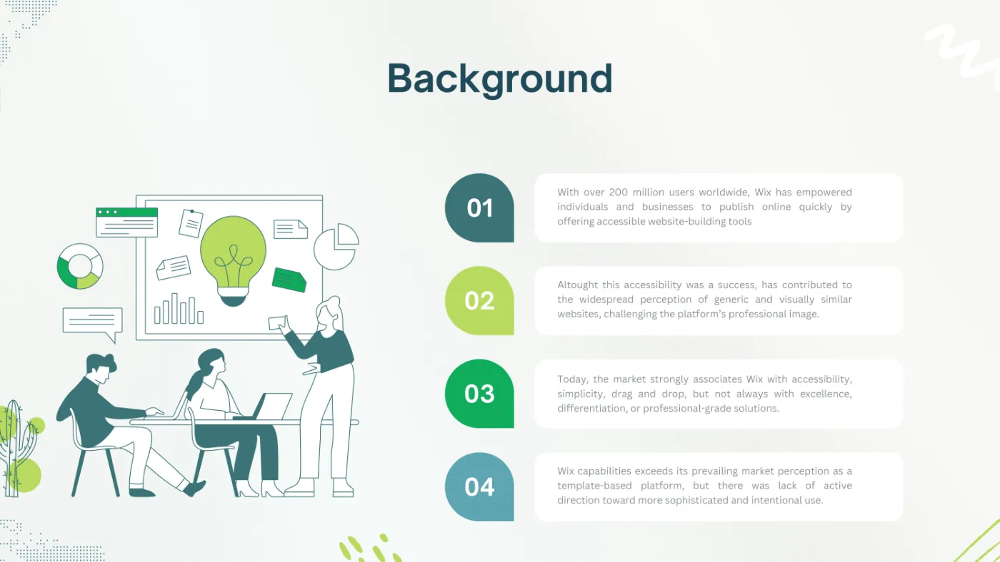
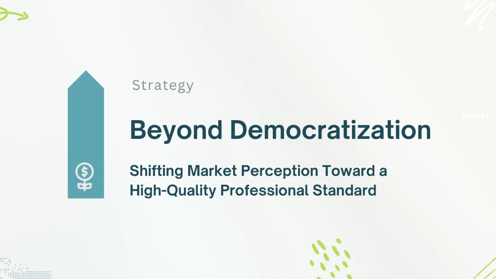
Swipe sideways or use the arrows. Tap a screenshot to enlarge it.
Three audiences, three messages
Existing medium-sized businesses whose website no longer reflects their growth: “upgrade your site into a professional, competitive one with advanced tools”. New entrepreneurs who set their standard from day one: “launch your first professional website, fully equipped from the start”. And corporate organizations that need to migrate without losing quality: “migrate and modernize your digital presence with integrated solutions”.
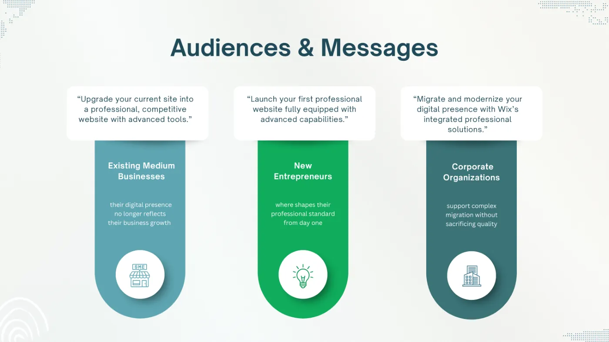
Mass communication for a standard, not for a product
Mass media is not used to explain features but to set a bar: what a professional website means today, what digital maturity looks like, what every user should expect from their own site and how design decisions shape the outcome. Two examples from the plan: a global summit where the brand announces its pivot toward the enterprise market and an exclusive profile of its leadership in a technology magazine.
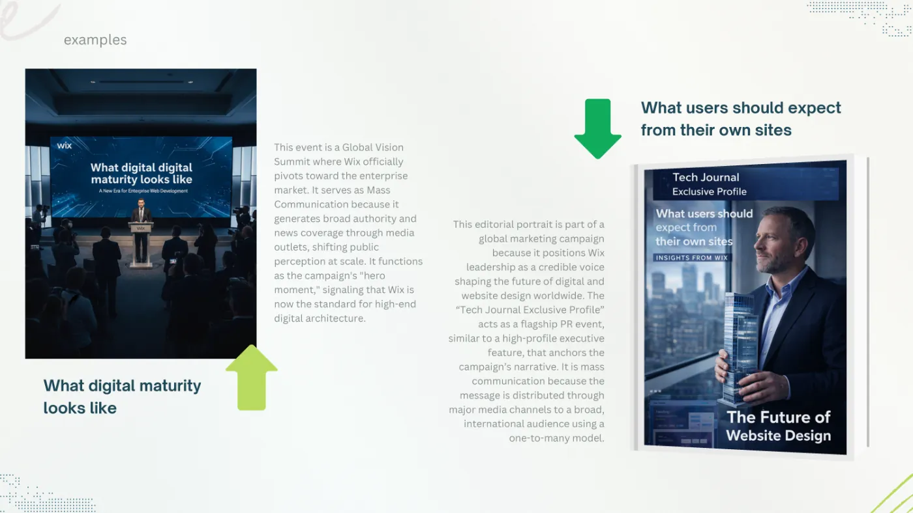
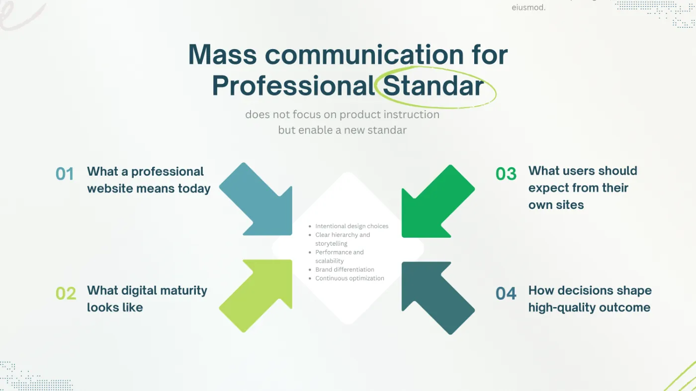
Swipe sideways or use the arrows. Tap a screenshot to enlarge it.
Two voices, and public relations that are earned
Credibility comes from a dual authority: the person leading the company represents the vision and the long term; UX leaders bring external validation, because professional standards emerge from real usage and design decisions. The channels follow from there: press releases, conferences, university panels, customer testimonials, industry forums and visits with demos. And one rule for public relations: legitimacy is earned, not declared. The stories that go to press are about real users who redesigned, grew or migrated.
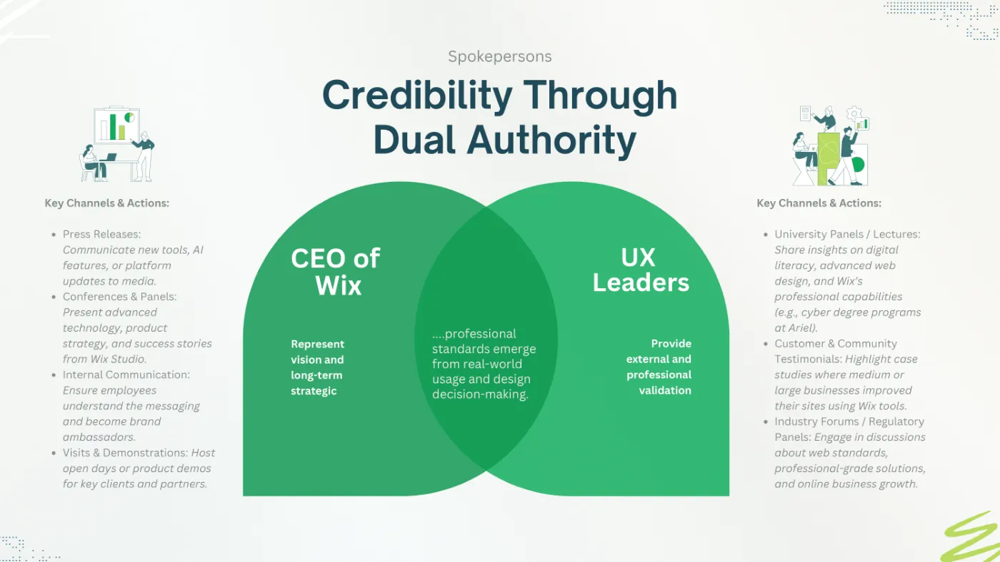
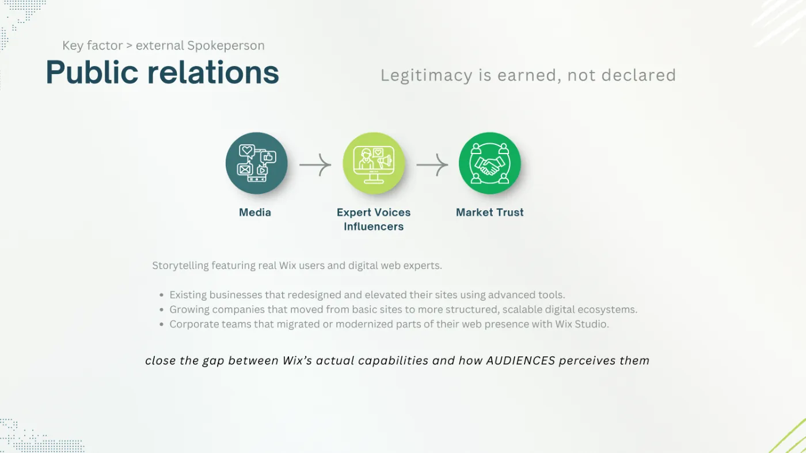
Swipe sideways or use the arrows. Tap a screenshot to enlarge it.
Digital and social: where the shift becomes practice
Each network has a job. Instagram shows the before and after of real sites and the decisions behind them. TikTok normalizes professional decisions with short video: real workflows and “why this works”. X is the real-time conversation about standards, UX and AI. LinkedIn connects the platform with business growth: agency perspectives, UX leadership, migration stories. YouTube explores at length what digital maturity looks like in practice. Examples from the plan: a technical webinar on large-scale migration, a series of micro-tips on Instagram and a class on web infrastructure during an academic tour.
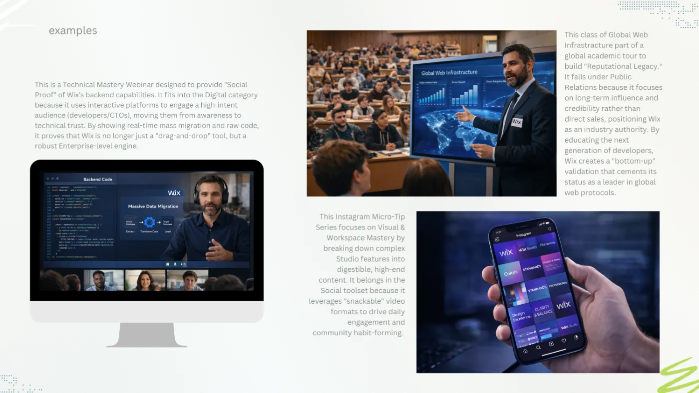
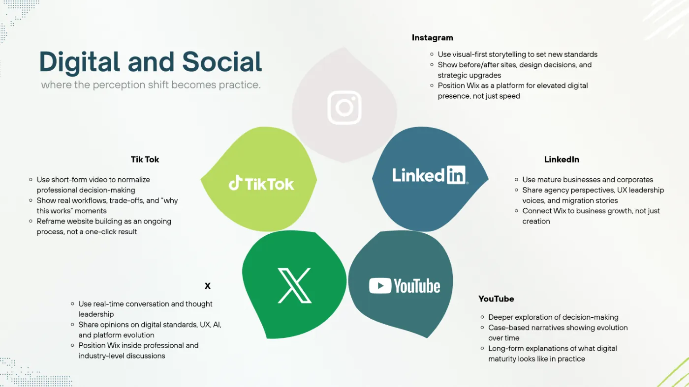
Swipe sideways or use the arrows. Tap a screenshot to enlarge it.
The transformation begins within
Professional maturity cannot be projected if the sales and development teams still think in terms of “simple template”. That is why the plan starts with internal communication: early access to the new tools, demo sessions, internal messages about launches and best practices, role briefings for marketing, sales and UX, and an ambassador program with internal contests. An internal launch event aligns everyone before any public announcement.
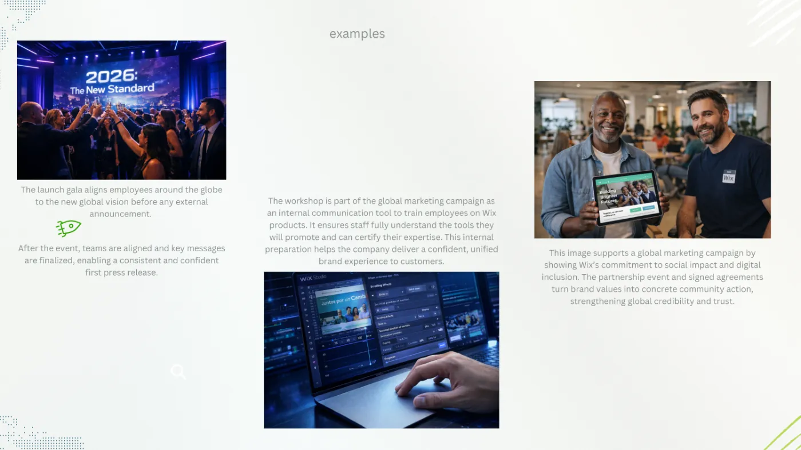
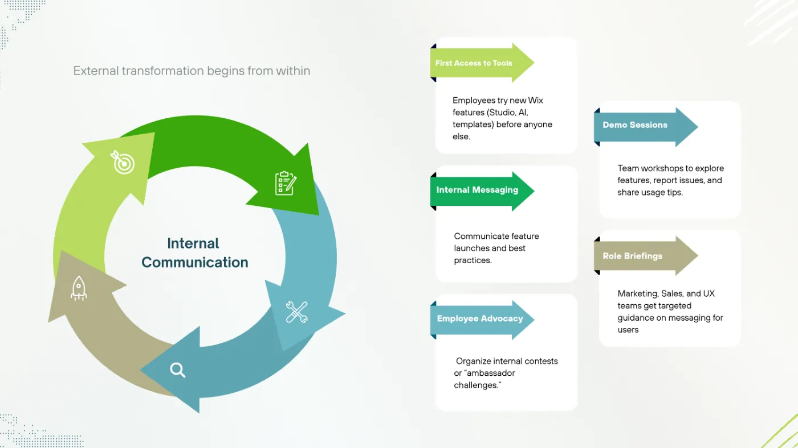
Swipe sideways or use the arrows. Tap a screenshot to enlarge it.
Responsibility to the community
Wix as a responsible actor in the digital ecosystem, not just a technology provider: reduce the access gap to professional tools, raise digital literacy and strategic thinking in web design, and measure the impact in educational, social and reputational terms. In the plan: a certification program for NGOs, school workshops, a grant announcement and an impact report at the end.
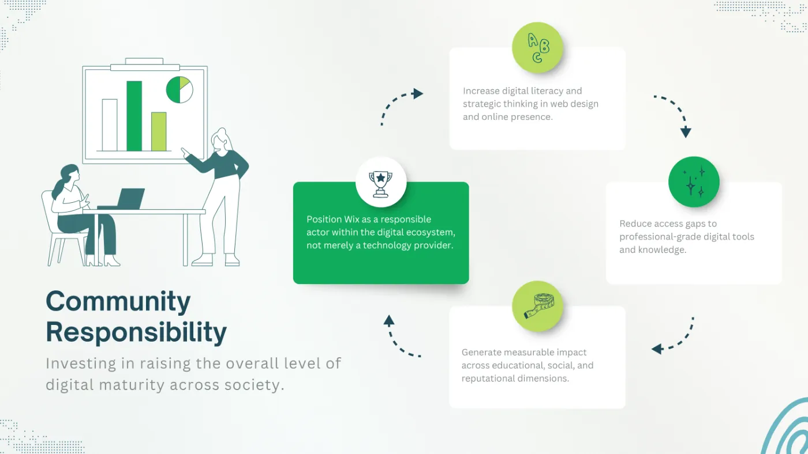
The plan: 70 actions over 24 weeks
Everything above becomes a 24-week Gantt chart with 70 numbered actions, each with its category, its strategic goal and the strategy slide that justifies it. Four phases: internal mastery and cultural shift; professional authority and academic launch; social saturation and enterprise leadership; reputation consolidation and social impact. The control actions (fortnightly syncs, a perception audit mid-campaign and another at the end, weekly AI sentiment analysis) run in parallel.
| Category | Actions | Examples |
|---|---|---|
| Internal communication | 13 | Leadership video, early access to Studio, ambassador contest, final staff survey |
| Public relations | 11 | Technical briefing with editors, university panel, roundtable with the leadership, signing with a UX association |
| Mass media | 8 | “Closing the Gap” press release, op-ed, TV segment, “The 2026 Shift” documentary |
| Digital | 6 | Studio case-studies landing page, digital maturity quiz, whitepaper, migration webinar |
| X · TikTok · LinkedIn · Instagram · YouTube | 22 | Daily threads, “The Craft” series, articles with agencies, before and after, infrastructure docuseries |
| Out of home | 1 | Billboards in business districts |
| Social responsibility | 4 | Certification for NGOs, school workshops, grants, impact report |
| Control | 5 | Fortnightly syncs, perception audits, sentiment analysis |
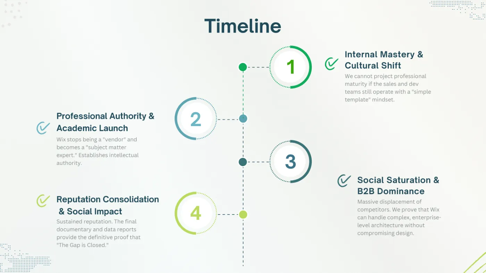
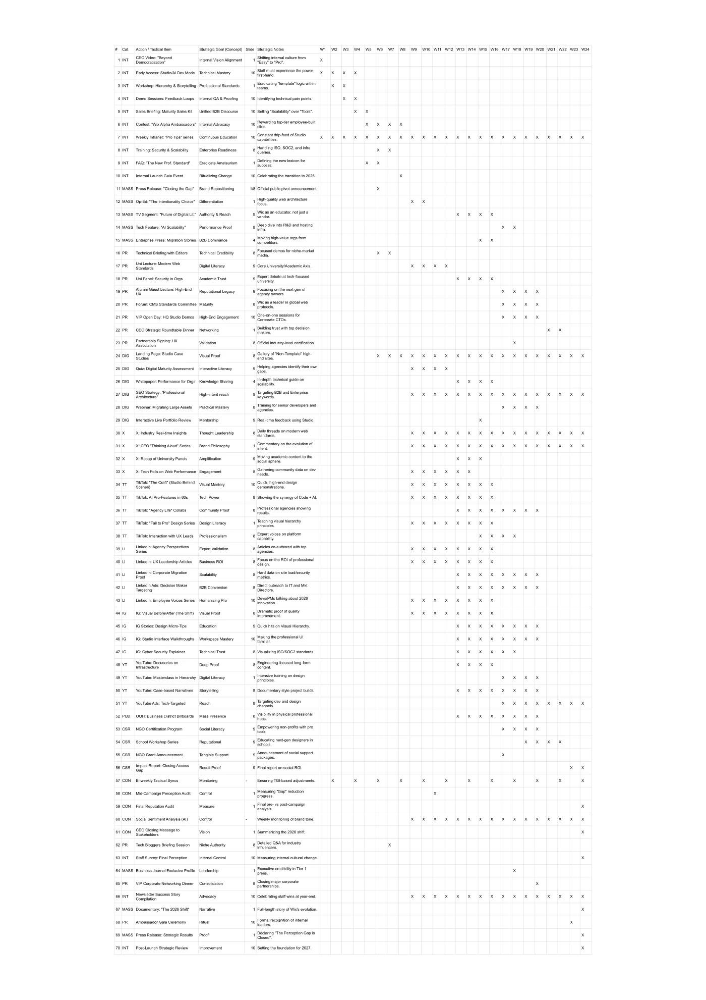
How to know whether it worked
Four indicators: internal alignment (that staff live the professional identity, measured with a survey at the end); capturing the enterprise and agency market (it has to show in results and in clients arriving from competitors); the impact of social responsibility (beyond the social, investor attraction on ESG criteria); and the label change, from “amateur” to “professional architecture”, measured in the coverage and the dialogue generated on X, LinkedIn and mass media.
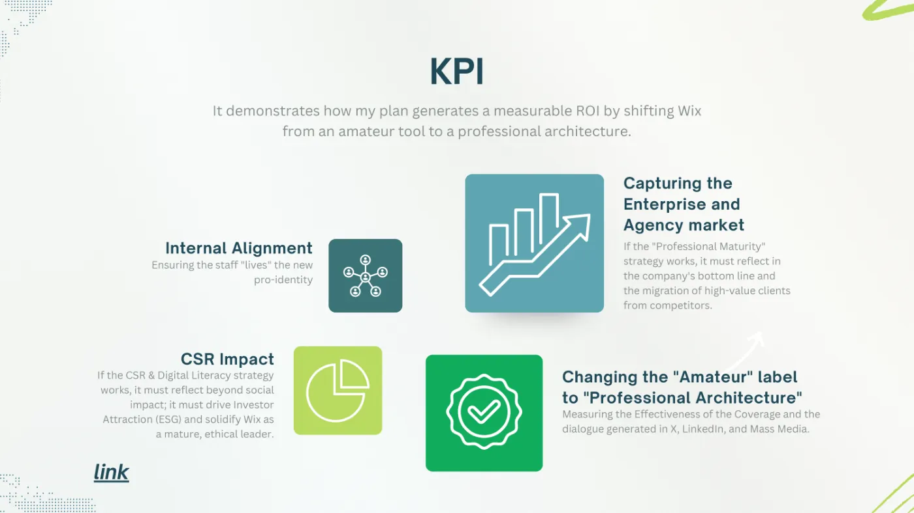
What I took away
That a communication plan is a single idea repeated through 70 different doors, and that order matters: first inside, then authority, then volume, and proof at the end. The Gantt chart is the part of the work I use most today: one action per row, one week per column, and a strategic reason for every cross.